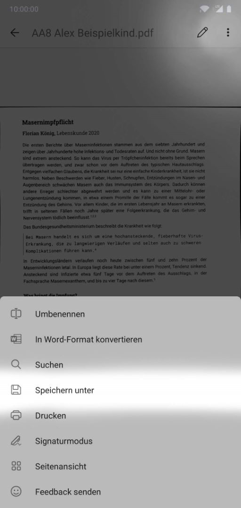
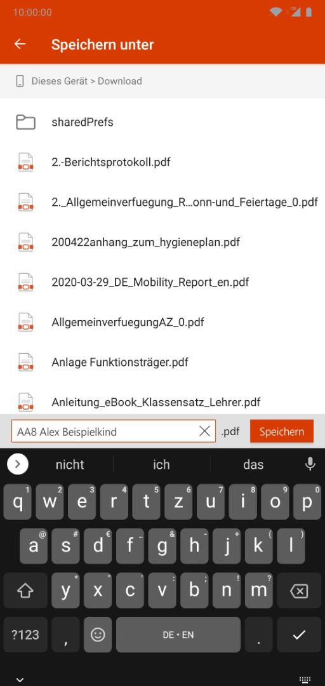

Nun geht es darum, deinen Scan zu speichern.
Öffne hierzu das Menü oben rechts und tippe auf Speichern unter.
Wähle jetzt einen Ort, an dem du die Datei speichern möchtest. Hierzu bietet sich zum Beispiel der Downloads-Ordner auf deinem Gerät an.
Gib unten einen sinnvollen Dateinamen an, damit du, aber auch deine Lehrkraft später erkennen, um was es sich handelt.
Zu guter Letzt tippst du rechts daneben auf Speichern.
Jetzt nur noch ins Schulportal laden